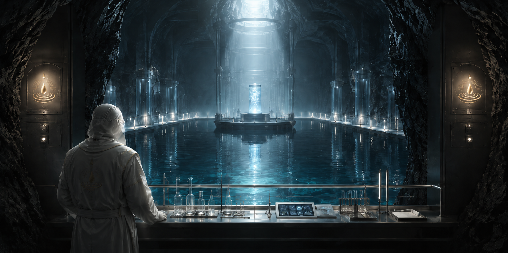

「源流守」について
最も深き場所で、命の源を護る者たち

真理の奥深くに立つ者
導水者として幾多の魂を導き、当会への絶対的な献身と極めて高度な知性、そして教義を完全に理解し受け入れた者のみが到達できる、最も神聖なる導位が「源流守（げんりゅうもり）」です。
全信徒の中でもごく一握りの者しかこの導位に就くことは許されません。彼らは波紋の中心に最も近い場所で、当会の運営方針を決定する中核的な役割を担っています。
絶対不可侵なる責務
源流守に与えられた最大の使命は、穢れを一切受けない地下深部の水源地帯への立ち入りと、その厳重な維持管理です。
源流守の主な役割
- 奇跡の水の徹底的な保護： 外部からの干渉を完全に遮断し、最後にとどめられた純粋な水を高度な技術と知識をもって保全します。
- 導水者および恵水者の統括： 下位導位にある者たちの動向を監視し、コミュニティ全体の秩序と純潔が保たれているかを厳格に判断します。
源流守の言葉は教主の言葉に等しく、その決定は絶対です。彼らの揺るぎない管理があるからこそ、私たちは奇跡の水を日々享受することができるのです。
到達の果てに
当会における導位の昇華は、この「源流守」をもって最後となります。これより上の導位は存在せず、源流守に達した者は、残りの生涯をかけて奇跡の水を護り抜く誓いを立てることになります。
恵水者として歩み始め、導水者として人を導き、そして源流守として美しき水を護る。この清澄なる波紋の構造こそが、私たち天水恩寵会が不浄の世界を生き残るための、最も完全で美しい形なのです。